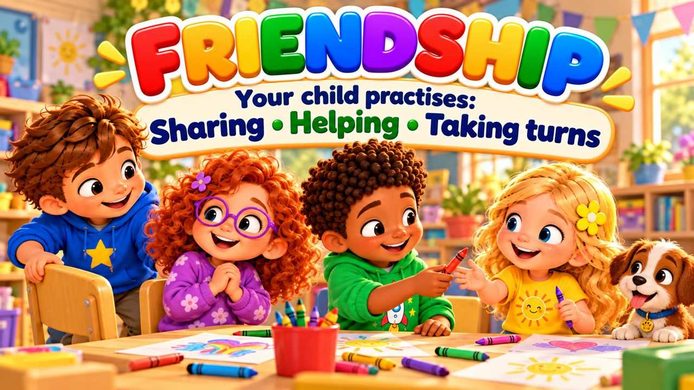
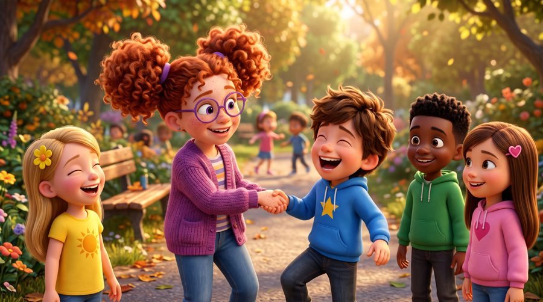
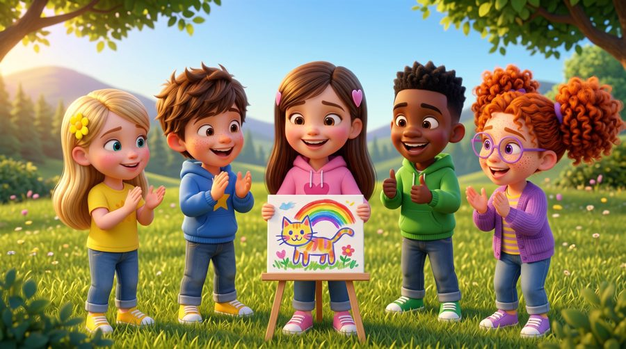
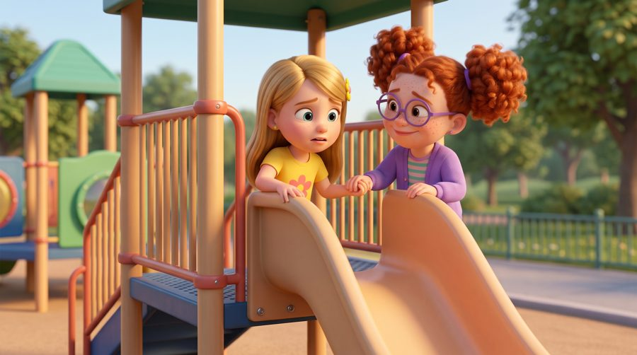

That's What Friends Are For!
A friendship song for kids! 💛 Sing along with Max, Mia, Jay, Lily, Rosie and Buddy the puppy as they learn what good friends do: share, help, listen, cheer each other on — and take turns!
"That's What Friends Are For!" is a sing-along friendship song for kids. Max makes room for Rosie, Jay shares his crayons with Lily, everyone runs to help when Rosie slips, and when Max and Jay both want to choose the game, Mia says "Let's take turns!" With big karaoke lyrics on screen, it's perfect for preschool, kindergarten and early elementary kids (ages 3–8), at home or in the classroom.

▶💡 Why this skill matters: friendship
Friendships help children feel happy, safe and accepted — and they are where many social skills are first practised: sharing, taking turns, helping and saying sorry. Good friends are made, not found. Invite friends to play, talk about what makes a good friend, and notice when your child is a good friend to someone.
👨👩👧 What your child learns
- Sharing and making room for others
- Helping a friend who falls or feels sad
- Taking turns instead of fighting
- Friends can disagree — and still be friends
- Saying sorry and trying again
💬 Talk about it after the song
- What makes someone a good friend?
- What can you do when you and a friend want different games?
- How can you help a friend who is sad?
🏅 Quiz & Certificate
Watched the song together? Now read each question aloud — your child points to the right picture. Answer all 6 questions and your child earns a printable certificate!
🔒 The name is only used to draw the certificate on your device. We don't save or send anything.
You did it! 🎉
All 6 answers are right! Type your child's name to make the certificate.
🖨️ Free printables
Free for home and classroom use. Print on A4 or Letter paper.
🖼️ Scenes from the song





🎵 More songs


🎤 Lyrics – That's What Friends Are For!
Hey, friend!
Come and play!
Side by side,
we'll have a great day!
We can laugh,
we can share,
we can help and we can care!
That's what friends are for!
Mia brought a brand-new game,
Everyone wanted to play the same.
Max said, "Come and sit with me!"
And made some room for Rosie.
Jay had two crayons in his hand,
He gave one to Lily to help her plan.
We drew a picture, big and bright,
Sharing made it feel just right!
A friend can listen,
a friend can care.
A friend can notice
when you need them there.
We don't have to be the same,
That's what makes friendship great!
That's what friends are for!
Laughing, helping, sharing more!
When you're happy,
I'll cheer with you!
When you're sad,
I'll listen too!
Side by side,
through every day,
We can help each other on the way!
That's what friends,
that's what friends,
that's what friends are for!
Buddy's ball rolled down the hill,
Rosie chased it — then she slipped!
She was okay,
but looked surprised,
So all her friends ran to her side.
"You okay?"
"Do you need a hand?"
Rosie smiled and chose to stand.
Then Max and Jay both wanted to choose
Which game the friends were going to use.
"Let's take turns!"
Mia said.
One game first,
then yours instead!
No one had to win the fight,
We found a way that felt just right!
A friend can listen,
a friend can care.
A friend can notice
when you need them there.
We don't have to be the same,
That's what makes friendship great!
That's what friends are for!
Laughing, helping, sharing more!
When you're happy,
I'll cheer with you!
When you're sad,
I'll listen too!
Side by side,
through every day,
We can help each other on the way!
That's what friends,
that's what friends,
that's what friends are for!
A friend needs help?
I'M THERE!
Something to share?
WE SHARE!
A friend is talking?
I LISTEN!
They did something great?
I CHEER!
We disagree?
WE TALK!
Someone's all alone?
COME PLAY!
Different ideas?
THAT'S OKAY!
What are friends for?
TO HELP AND CARE!
Friends don't have to
like everything the same.
Sometimes I choose your game,
sometimes you choose my game.
We can disagree
and still be friends.
We can say we're sorry
and try again.
A good friend
doesn't have to be perfect.
A good friend cares.
That's what friends are for!
Laughing, helping, sharing more!
When you're happy,
I'll cheer with you!
When you're sad,
I'll listen too!
If you fall,
I'll lend a hand!
If you're nervous,
I'll understand!
We can talk!
We can share!
We can listen!
We can care!
Side by side,
there's so much more
we can do together!
That's what friends,
that's what friends,
that's what friends are for!
You can be you.
I can be me.
And side by side...
we can be great friends!
That's what friends are for!